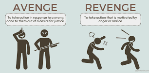

- Peer Pressure: Teenagers and students may feel pushed to join in on bullying to be accepted by a certain group or to gain popularity, especially in school or social circles.
- Jealousy and Envy: Some people bully others online because they are jealous of their looks, lifestyle, success, relationships, or attention they receive on social media.
- Revenge or Retaliation: Cyberbullying is sometimes a form of payback. A person who feels hurt, excluded, or offended may try to "get even" by attacking someone online.
- Anonymity on the Internet: The internet allows users to hide their identity, making it easier for them to bully others without facing consequences. They feel safe behind a screen.
- Boredom or Lack of Purpose: Some people cyberbully because they’re bored or want attention. They don’t think about how their actions affect others and treat it like a joke or game.
- Lack of Empathy or Awareness: Many bullies don’t understand the pain they’re causing. They may never see the victim’s reaction, so they don’t realize the emotional damage being done.
- Home or Personal Issues: Sometimes, people who are experiencing stress, abuse, or problems at home may release their anger or frustration by bullying others online.

